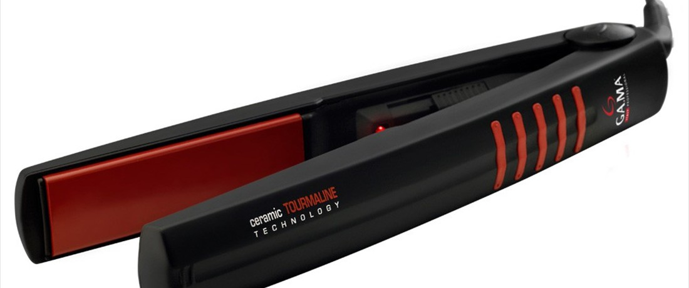

- La plancha Tourmaline Ion Plus tiene sus patines recubiertos con nano partículas de tourmaline, teniendo la capacidad de emitir iones negativos y calor infrarrojo lejano. Logrando así, un efecto anti frizz, mientras que el cabello es cuidado al máximo. Su tecnología Ion Plus, potencia al máximo la emisión de iones negativos naturales, neutralizando el efecto frizz.
 La plancha Ceramic Ion Electrónica logra un lacio perfecto en simples pasos. Su tecnología Ceramic Ion protege el cabello mientras logra un peinado de acabado profesional. Cuenta con un regulador para adaptar la temperatura a cada tipo de cabello. Sus patines con Suspension System permiten un mayor deslizamiento de la plancha sin fricción.
La plancha Ceramic Ion Electrónica logra un lacio perfecto en simples pasos. Su tecnología Ceramic Ion protege el cabello mientras logra un peinado de acabado profesional. Cuenta con un regulador para adaptar la temperatura a cada tipo de cabello. Sus patines con Suspension System permiten un mayor deslizamiento de la plancha sin fricción. La plancha Ceramic Electronic Infrared tiene sus patines recubiertos con nano partículas de tourmaline, teniendo la capacidad de emitir iones negativos y calor infrarrojo lejano. Logrando así, un efecto anti frizz, mientras que el cabello es cuidado al máximo. Cuenta con un regulador para adaptar la temperatura a cada tipo de cabello.
La plancha Ceramic Electronic Infrared tiene sus patines recubiertos con nano partículas de tourmaline, teniendo la capacidad de emitir iones negativos y calor infrarrojo lejano. Logrando así, un efecto anti frizz, mientras que el cabello es cuidado al máximo. Cuenta con un regulador para adaptar la temperatura a cada tipo de cabello. Regulador de temperatura. Temperatura 140° C a 19° C. Diámetro 19, 25 y 33 mm. Apagado automático. Cable rotativo con aro para colgar.
Regulador de temperatura. Temperatura 140° C a 19° C. Diámetro 19, 25 y 33 mm. Apagado automático. Cable rotativo con aro para colgar.
 2
2 3
3 4
4